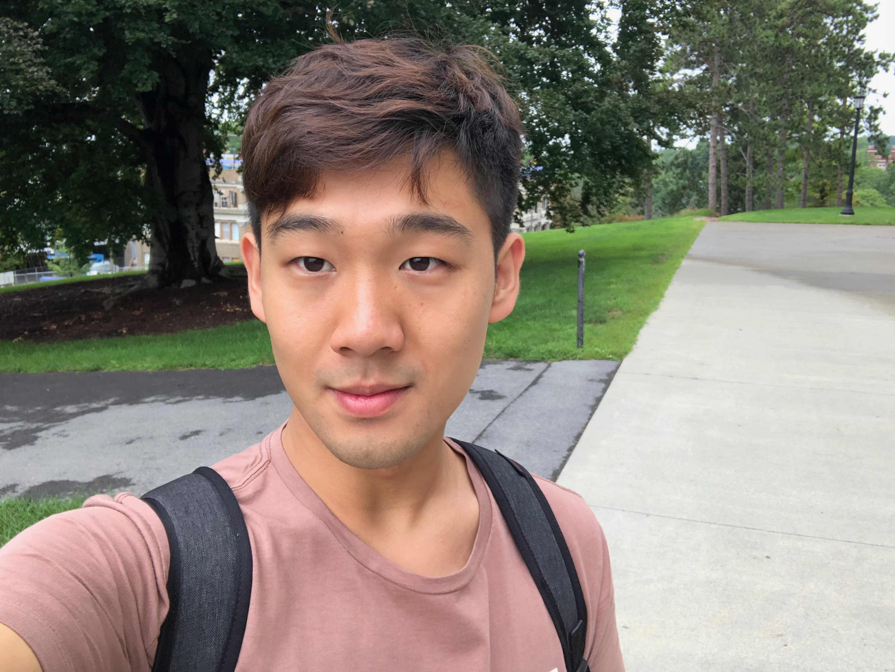

Weiran Wang
Cornell University
Master of Electrical and Computer Engineer
I am looking for a Software Development job
Education
- Cornell University
- Jilin University
My Courses
- Machine Learning
- Embedded Operating System Object Finding Robot
- Data Science
Contact Me
Internships